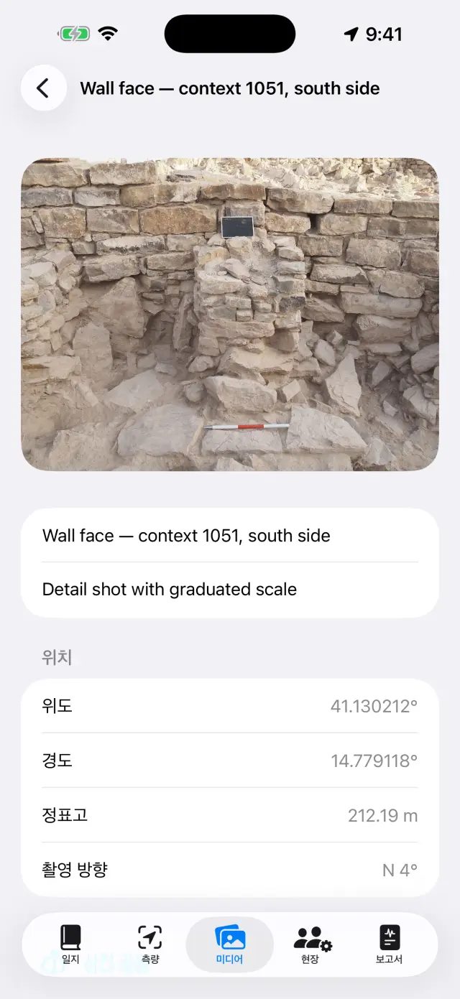
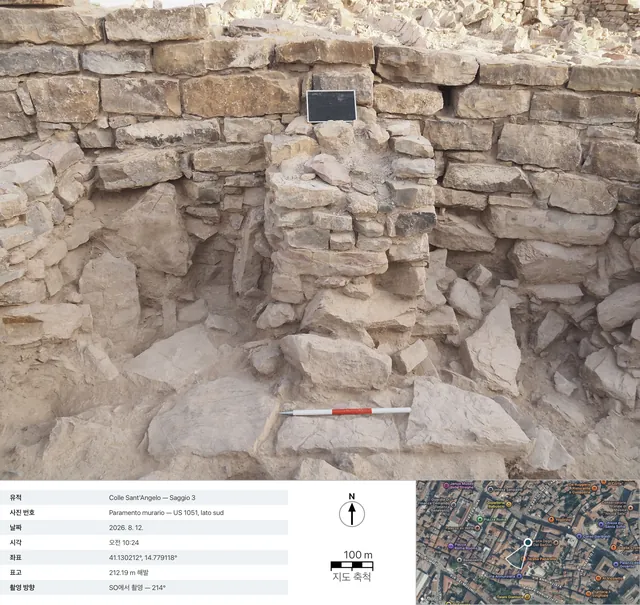

iPhone와 iPad를 위한 디지털 발굴 일지입니다. 100% 오프라인으로 작동하며, 데이터는 항상 기기에만 저장됩니다.
한마디로
생각은 하나뿐입니다. 발굴하는 하루하루가 하나의 페이지가 되
어 스스로 채워집니다. 기록은 각자 있어야 할 곳에 남깁니다 — 측량에서 GNSS 측점
을, 미디어에서 사진을, 현장에서 작업 시간을 — 그러면 그날의 페이지가
일지에서 이를 모두 자동으로 모아 줍니다. 주말이나 발굴이 끝날 때가
되면 보고서는 이 페이지들로부터 저절로 만들어집니다.
전형적인 하루
아침그날의 페이지를 열고 날씨와 일기를 기록합니다 (받아쓰기로 말해서 입력할 수도 있습니다)
출근현장에서 출근한 사람과 시간을 기록합니다
측량GNSS 측점을 획득합니다. RTK를 사용한다면 먼저 기준점을 점검합니다
사진미디어에서 촬영합니다. 좌표가 자동으로 첨부됩니다
도면사진 위에 단면도나 평면도를 따라 그립니다 (디지털 트레이싱지)
저녁보고서 탭에서 일일 보고서를 생성합니다. 바로 보낼 수 있는 PDF가 만들어집니다
시작하기
처음 실행하면 예시 유적이 이미 준비되어 있습니다. 나만의 유적을 만들려면
상단의 유적 이름 (🗺 아이콘)을 탭한 다음 새 유적…을 선택
하고 이름을 지정합니다 (예: "Colle Sant'Angelo — 트렌치 3").
현재 활성화된 유적 이름은 항상 상단에 표시되며, 모든 탭에 해당 유적의 데이
터가 표시됩니다. 유적을 전환하려면 이름을 다시 탭하세요: 목록은 "내 유적"이
라는 제목 아래에 있으며, 유적 이름 변경…으로 아무것도 잃지 않고
이름을 고칠 수 있습니다.
요청 시 다음 권한을 허용하세요: 위치 (측점을 위해), 카메
라 (사진을 위해), 마이크 (받아쓰기를 위해), 블루투스
(외부 수신기를 사용하는 경우에만).
다섯 개의 탭
📓 일지
특정 날짜를 탭하면 해당 페이지가 열립니다. 그날의 일기, 날씨, 출근, 측점,
사진, 도면이 이미 모여 있습니다.
날씨는 직접 입력할 수도 있고 (예: "맑음, 28°C, 약한 바람"),
가져오기를 탭해 노르웨이 기상청에 현재 날씨를 문의할 수도 있습니
다. 가져오려면
네트워크가 필요하며 오늘 날짜에서만 작동합니다. 어제의 날씨는 더 이상 가져올
수 없습니다. 오후에 한 번 더 탭하면 기록이 하나 더 추가됩니다. 직접 입력한 내
용이 항상 우선합니다.
가져오기를 실행하면 외부로 전송되는 것은 약 11미터 단위로 반올림된 대략적
인 위치뿐이며, 보고서에서는 이 줄이 보고서 언어로 표시됩니다.
발굴일 목록하루의 페이지
📍 측량
상단 패널에 실시간 위치가 표시됩니다: 좌표, 높이, 정확도, Fix 유형 (GPS /
RTK Float / RTK Fix).
폴을 사용한다면 안테나 높이 (m)를 설정하세요. 측점의 높이가 자
동으로 지면 기준으로 환산됩니다.
측점 획득을 탭합니다. 이름은 자동으로 번호가 매겨지지만 (P001,
P002…), 직접 이름을 입력할 수도 있습니다 (예: "US 102 — 바닥 높이"). 메모도
추가할 수 있습니다.
목록과 지도를 전환하면 측점을 실제 위치에서 확인할
수 있습니다. 지도에서는 지적도나 다른 WMS 서비스를 활성화할 수 있습니다.
기준점 (🏁)에는 전용 섹션이 있습니다. CSV로 가져오거나 직접 만든 다음,
실시간 점검을 열고 폴 끝을 못에 댄 채로, 측량을 시작하기 전에
Δ북/Δ동/Δ표고 편차를 확인하세요.
수준 야장 아래에는 광학 레벨을 위한 현장 야장이 있습니다: 측
점, 후시와 전시 읽기, 출발 기준점에서 계산한 표고, 그리고 폐합 확인까지 기록
합니다. 수준측량으로 얻은 점은 GNSS 측점과 마찬가지로 표고와 함께 유적에 들어
갑니다.
패널 아래에는 NMEA 기록이 있습니다. 외부 수신기
PRO의 원시 데이터 흐름이 저절로 파일에 저장됩니다 —
안테나를 켜면 기록이 시작되고 끄면 끝나므로, 따로 기억해 둘 필요가 없습니다.
미심쩍은 하루를 다시 읽어 보거나, 후처리를 맡은 사람에게 원시 데이터를 넘길
때 쓸모가 있습니다. 파일은 공유하거나 삭제할 수 있지만 기록 중인 파일만은 예
외이며, 목록은 수신기가 꺼져 있어도 열리므로 어제의 파일에도 언제든 손이 닿습
니다.
측량의 GNSS 패널지도의 측점과 기준점
각 측점은 두 가지 높이를 모두 저장합니다: 타
원체고와 정표고. 휴대폰 내장 GPS를 사용하면 정표고를 사용할 수 없는 경우가 있
으며, 이때는 외부 수신기가 필요합니다 (아래 참조).
📷 미디어
카메라 버튼으로 촬영하거나 사진 보관함에서 가져옵니다.
사진은 자동으로 번호가 매겨지며 (F001, F002…), 사용 가능한 가장 최근의
GNSS 위치로 위치 정보가 태그됩니다.
촬영 시 앱은 나침반으로부터 촬영 방향도 기록합니다. 사
진 상세와 보고서에서는 "SO에서 촬영 — 214°"처럼 표시되며, 수직으로 내려다보
며 찍은 사진(평면도, 유구 바닥 등)에서는 위쪽 가장자리의 방향을 나타내는 직
하 촬영 표기가 나타납니다. 나침반에 간섭이 있으면 앱이 알려줍니다.
사진을 탭하면 제목과 메모를 설정할 수 있습니다 (예: "US 102, 북쪽에서 촬
영").
사진 카드 공유PRO는 기록용
사진 카드를 생성합니다: 사진 아래에 촬영 데이터(유적, 번호, 날짜와
시각, 좌표, 표고, 방향)가 표시되고, 위치 핀과 촬영 방향 원뿔이 있는 위성 이
미지, 지도 축척 막대, 북쪽 화살표가 함께 들어갑니다. 지도에는 네트워크가 필
요합니다. 네트워크가 없어도 카드는 생성되며, 데이터 패널이 더 크게 표시됩니
다.
사진 갤러리

사진 상세 화면: 좌표, 표고, 촬영 방향

내보낸 사진 카드: 촬영 데이터, 촬영 방향 원뿔이 있는 위성 이미지, 지도 축척 막대, 북쪽 화살표
✏️ 도면 (미디어 내)
새 도면을 만들고 유적 사진을 배경으로 선택하세요. 이것이 여러분의 디지털
트레이싱지입니다. 도면은 여러 날에 걸쳐 이어서 작업할 수 있습니다. 사진을 넣
지 않아도 됩니다: 빈 트레이싱지 위에도 똑같이 그릴 수 있습니다.
손가락이나 Apple Pencil로 층, 절단면, 돌을 따라 그립니다. 핀치로
확대/축소할 수 있습니다 (최대 6배까지, 두 손가락으로 더블 탭하면 1배
로 돌아갑니다). 사진이 선을 가린다면 카메라 메뉴에서 배경 불투명도…
를 선택해 5%에서 100% 사이로 필요한 만큼 맞추세요: 흐려지는 것은 사진이지 도
면이 아닙니다. 이 설정은 도면에 남아 PDF, DOCX, PNG 그리고 범례와 함께
내보내기에서도 그대로 적용됩니다.
나머지는 모두 도구 (도구 막대의 스패너) 안에 있으며, 여섯 가지
모드의 목차입니다: 텍스트 상자, 따라 그리기PRO, 사진 축척, 표고가 있는 점,
해칭, 선 스타일. 한 번에 하나만 켤 수
있습니다: 체크 표시가 어느 것인지 알려 주며, 켜져 있는 동안 손가락은 그리지
않고 그 도구를 조작합니다 — 다시 그리려면 체크된 항목을 한 번 더 탭하세요.
이미지에 작용하는 세 가지 (따라 그리기, 축척, 표고가 있는 점)는 배경 사진이
있을 때만 나타납니다.
텍스트 상자로 라벨 (예: "US 1002")을 넣으세요: 이동할 수 있
고, 핀치로 크기를 조절할 수 있으며, 네 가지 서체 중에서 고를 수 있습니다.
따라 그리기PRO는 탭한 대상(돌 하나,
층의 경계 등)의 윤곽을 인식해 선으로 바꿉니다. 색상, 굵기, 선 스타일은 모드를
벗어나지 않고 바꿀 수 있고, 윤곽은 계단 모양이 아니라 매끄럽게 나옵니다. 모든
과정이 기기에서 이루어지며 네트워크가 필요 없습니다.
따라 그리기 안에서 전체 따라 그리기PRO는 사진 전체를 혼자서 한 바퀴 돕니다. 시작 시트에
서 겉모습을 정하고 — 윤곽만, 또는 해칭, 필요하면 색 배경
까지 — 시작을 누르세요: 막대가 어디까지 왔는지 알려 주며, 수십 초
가 걸립니다. 나타나는 것은 미리보기이지 도면이 아닙니다: 형태
안쪽을 한 번 탭하면 제외되고, 다시 탭하면 되돌아옵니다 (겹친 형태에서는 손가
락 아래의 가장 작은 것이 이깁니다). 정밀 패스는 아무것도 찾지 못한
곳만 다시 훑고, 적용은 남은 것을 도면에 올립니다. 적용하기 전까지
도면은 손대지 않은 그대로입니다.
사진 축척(자) 도구로 알려진 길이의 양 끝 — 표척의 한 구간 —
을 탭하고 실제 거리를 입력하세요. 사진에 축척이 적용되며, 이후의 모든 내보내
기는 미터 단위로 표시됩니다.
표고가 있는 점을 사용하면 유적의 GNSS 측점(또는 직접 입력한
점)의 십자 표시를 사진 위에 놓을 수 있습니다. 이름, 표고, 좌표가 지시선이
달린, 드래그할 수 있는 라벨에 표시됩니다. 값이 도면을 가릴 때는 선택한 라벨을
핀치해 작게 하거나 크게 할 수 있습니다.
해칭은 형태를 채웁니다: 닫힌 형태의 안쪽을 탭
하면 그 형태가 채워집니다. 관용 해칭 열 가지 — 석조 / 돌,
벽돌, 모르타르 / 회벽, 점토, 실트,
모래, 자갈, 숯 / 재, 기반암,
목재 — 와 색 배경 (불투명도를 가진 색)이 있으며, 따로
또는 함께 쓸 수 있습니다. 한 형태가 다른 형태 안에 있으면 손가락 아래의 더
작은 것이 이깁니다; 채우기 제거로 지웁니다. 사진은 필요 없습니다:
채우기는 그려진 형태에 작용하므로 빈 트레이싱지 위에서도 됩니다.
선 스타일은 이미 그려진 선에 옷을 입힙니다: 선
을 탭하고 실선, 파선, 점선,
일점쇄선 중에서 고른 다음 굵기를 조절하세요.
이 스타일로 그리기를 켜면 이후의 선이 처음부터 그 스타일로 태어납
니다; 스타일 제거는 선을 다시 꽉 찬 상태로 되돌립니다. 화면상의 효과가
아닙니다: 짧은 선들은 진짜 선분이며 PDF, DOCX, PNG, SVG, DXF에서도 그대로 남
습니다.
범례와 함께 내보내기PRO: 이미지 아
래에 흰 띠가 붙습니다 — 축척이 있으면 축척 막대, 수직으로 내려다보며 찍은
사진에는 북쪽 화살표, 정면 사진에는 "…에서 촬영" 표기가 들어갑니다.
벡터로 내보내기PRO: 도면용 SVG, 또
는 GIS용 DXF입니다. 수직으로 내려다보며 찍은 사진에 좌표가
있는 표고 점을 두 개 이상 놓으면 DXF는 UTM 좌표계로 좌표 참조되
어 QGIS에서 자동으로 올바른 위치에 배치됩니다. 축척만 있으면 로컬
미터 단위로 내보내지고, 둘 다 없으면 앱이 이를 알려주고 단위 없는 파일은 만
들지 않습니다. 불투명도에서는 SVG만 예외입니다: 원본 사진 파일을 그대로 품기
때문에, 흐리게 한 배경도 SVG 안에서는 원래 세기로 나옵니다.
완료되면 사진을 숨기세요. 깔끔한 도면만 남아 보고서에 바로 사용할 수 있습
니다.
디지털 트레이싱지
👷 현장
그날의 출근을 기록합니다: 각 인원의 성명, 직무, 작업 시간입니다.
장비 목록과 각 장비의 담당자를 관리하세요.
출근 및 작업 시간
📄 보고서
유형을 선택하세요: 일일 (무료, 워터마크 포함),
주간, 월간, 또는 전체 부록이 포함된
최종 보고서 PRO.
보고서 언어는 17개 언어 중에서 선택할 수 있으며, 앱 언어
와는 별개입니다. 앱을 한국어로 사용하더라도 보고서는 독일어로 만들 수 있습니
다.
PDF를 생성하거나, 로고와 사진이 포함된 DOCX PRO,
측점 CSV, QGIS용 GeoJSON PRO으로 내보낼 수 있습니다.
보고서에서 사진 포함이 켜져 있을 때 사진 대신 사진 카드PRO를 선택할 수 있습니다. 각 사진은 데이터와 지도
가 모두 담긴 기록 카드 형태로 보고서 언어에 맞춰 PDF와 DOCX에 들어갑니다.
보고서 생성
외부 GNSS 수신기와 NTRIP
외부 수신기 (센티미터급 안테나)를 사용하면 앱이 RTK 정확도에 도달합니다. 내
장 GPS는 항상 대체 수단으로 사용할 수 있습니다.
수신기 전원을 켜고 휴대폰의 블루투스를 활성화하세요.
측량에서 위치 소스를 선택하세요: 외부 GNSS
(BLE/NMEA)PRO를 선택하고 목록에서 수신기를 선
택합니다. MFi 수신기 (무료)와 네트워크로 NMEA를 전송하는 수신기도 지원됩니다.
RTK 보정을 위해 NTRIP을 설정하세요: Caster 주소, 포트,
Mountpoint, 사용자 이름, 비밀번호 (기기의 키체인에 저장됩니다). 앱이 위치를
Caster로 전송하고 보정 데이터를 수신합니다.
RTK Fix로 전환될 때까지 기다리세요: 센티미터급 정확도입
니다. 시작하기 전에 기준점에서 점검하세요.
휴대폰 신호가 닿지 않는 곳에는 인터넷 없이 가
는 길도 있습니다: 알려진 점에 세운 기준국과 이동국이 LoRa 무
선으로 보정 데이터를 주고받는 방식으로, Caster도 SIM도 필요 없습니다 (ESP32
브리지를 쓰는 DFRobot RTK 키트). 앱 입장에서는 달라지는 것이 없습니다 — 수신
기에서 이미 보정된 NMEA를 받을 뿐입니다 — 브리지 조립은 따로 그 README에 문
서로 정리되어 있습니다: 여기는 앱 사용 설명서이지 펌웨어 매뉴얼이 아닙니
다.
백업 및 교환
유적 메뉴에서 유적 내보내기 (.zip)를 탭하세요. 그 안에는 모든
것이 들어 있습니다 — 일지, 측점, 사진, 도면, 작업 시간, 기준점입니다.
이 ZIP 파일은 원하는 곳에 보관하세요 (파일 앱, Drive, 이메일 등). 이것이
백업입니다. 이 앱은 의도적으로 클라우드를 사용하지 않습니다.
유적 가져오기 (.zip)…는 다른 기기에서 유적을 다시 만듭니다.
iPhone과 Android 사이에서도 가능합니다.
⚠️ 유적 삭제…는 유적과 그 안의 모든 내용을 삭제하며
되돌릴 수 없습니다. 확신이 서지 않으면 먼저 ZIP을 내보내세요.
무료 버전과 Pro
무료
Pro
유적
1
무제한
GNSS
내장 GPS, MFi 수신기
+ BLE/NMEA, NTRIP
보고서
워터마크 포함 일일 보고서
모두, 워터마크 없음
내보내기
PDF, CSV
+ 로고와 사진이 포함된 DOCX, GeoJSON
도면
트레이싱지, 확대/축소, 텍스트, 축척, 표고가 있는 점, 해칭, 선 스타일, 배경 불투명도
+ 범례와 함께 내보내기, SVG/DXF
자동 따라 그리기
—
탭 방식과 "전체 따라 그리기"
NMEA 기록
파일 다시 읽기와 공유
기록 자체 (외부 안테나 필요)
수준 야장
✓
✓
사진 카드
—
공유 및 보고서 내 카드
음성 받아쓰기
✓
✓
보고서 언어
17
17
Pro는 월간 또는 연간 자동 갱신 구독이거나 일회성 평생 구매입니다. Apple ID
설정에서 언제든지 관리하거나 해지할 수 있습니다.
문제 해결
블루투스 수신기가 표시되지 않거나 연결되지 않습니다
다음 순서로 확인하세요.
수신기가 켜져 있고, 다른 앱이나 다른 휴대폰에 이미 연결되어 있지 않은지;
시스템 블루투스가 켜져 있고 앱에 블루투스 권한이 있는지 (설정 → Giornale
di Scavo);
하늘이 트여 있어야 합니다. 울창한 나무나 가까운 벽은 신호를 약화시킵니
다. 상태가 좋지 않으면 RTK Float (데시미터급)에 머무를 수 있습니다.
가까운 Mountpoint (30~40km 미만) 또는 VRS 네트워크를 선택하세요.
NTRIP가 연결되지 않습니다
주소와 포트(대개 2101)를 확인하고 Mountpoint가 실제로 존재하는지 확인하세
요. 대부분의 Caster는 목록(sourcetable)을 공개합니다.
사용자 이름이나 비밀번호가 틀리면 401/403 오류가 발생합니다. 자격 증명을
다시 확인하세요.
일부 네트워크는 위치 정보(GGA) 전송을 요구합니다. 앱이 자동으로 전송하지
만, 수신기가 먼저 Fix를 확보하고 있어야 합니다.
정표고가 비어 있거나 0입니다
휴대폰 내장 GPS는 타원체고만 제공합니다. 정표고는 외부 수신기의 GGA 문장에
서 얻습니다. 수신기가 없어도 측점에는 타원체고가 저장됩니다.
받아쓰기가 작동하지 않습니다
설정에서 마이크와 음성 인식 권한을 확인하세요.
필사는 기기에서 처리됩니다. 처음 사용할 때 시스템이 언어 모델을 다운로드
해야 할 수 있습니다 (이때만 네트워크가 필요하며, 이후에는 오프라인으로 작동합
니다).
짧은 문장으로 말하세요. 텍스트는 일기의 끝에 추가됩니다.
지적도 (WMS)가 표시되지 않습니다
앱 자체는 오프라인이지만 WMS 레이어는 웹 서비스이므로 네트워크 연결과 작동
중인 서비스가 필요합니다. 이탈리아 지적도는 미리 설정되어 있습니다. 다른 국가
의 경우 해당 국가 공식 서비스의 WMS 엔드포인트를 입력하세요 (EPSG:3857을 지원
해야 합니다). 데이터 통신이 되지 않는 곳에서도 기본 지도와 측점은 계속 표시됩
니다.
사진에 좌표가 없습니다
사진의 위치는 가장 최근의 GNSS Fix에서 가져옵니다. 먼저 측량을 열고 위치가
확정될 때까지 기다린 다음 촬영하세요. 위치 권한이 거부되어 있으면 사진은 좌표
없이 저장됩니다.
보고서에 사진이나 로고가 없습니다
보고서 내 사진, 로고, 맞춤 머리글은 Pro 기능이며 DOCX와 PDF 모두에 적용됩
니다. 무료 일일 보고서에는 워터마크가 있고 사진은 포함되지 않습니다.
실수로 유적을 삭제했습니다
삭제는 최종적이며 데이터는 복구할 수 없습니다 (클라우드가 없습니다). 이전
에 내보낸 ZIP이 있다면 가져와서 그 시점의 유적 상태로 복원할 수 있습니다. 권
장: 매일이 끝날 때 ZIP을 내보내세요.
Pro를 구매했는데 아직 잠겨 있습니다
Pro 화면에서 구매 복원을 탭하세요. 구매할 때 사용한 것과 동일한
Apple ID를 사용해야 합니다. 기기를 변경했다면 복원을 통해 구독이나 평생 라이
선스를 되찾을 수 있습니다.
"가져오기"가 회색으로 표시되거나 "날씨 정보를 사용할 수 없음"이라고 표시됩니다
버튼이 회색으로 표시되어 있다면 지나간 날짜의 페이지를 보고 있는 것입니
다. 날씨는 오늘 날짜에서만 가져올 수 있습니다.
"날씨 정보를 사용할 수 없음"이 표시된다면 네트워크가 없거나, 유적에 위치
를 가져올 GNSS 측점이 아직 없는 것입니다. 측점을 하나 획득한 다음 다시 시도하
세요.
사진 카드에 지도가 없습니다
위성 이미지는 Apple에서 가져오므로 네트워크가 필요합니다. 앱은 최대 15초
까지 기다린 다음 지도 없이 카드를 생성합니다(데이터는 네트워크를 기다리지
않습니다). 현장의 느린 네트워크에서는 이 대기 시간을 모두 채울 수 있습니다.
Wi-Fi 환경에서 다시 시도하세요. 사진에 위치 정보가 없으면 애초에 지도가 나
타나지 않습니다.
"전체 따라 그리기"가 아무것도 찾지 못하거나 너무 많이 찾습니다
이 한 바퀴는 배경 사진 위에서 이루어집니다: 사진이 없으면 명령 자체가 없
고, "사진 준비 중…"이 보이는 동안에는 모델이 아직 준비되지 않은 것입니다 —
기다리세요;
형태가 너무 적으면 정밀 패스를 누르세요: 첫 바퀴에서 아무것도
보지 못한 곳만 더 촘촘한 격자로 다시 훑어 찾은 것을 더하며, 여러분이 제외한
것을 되돌려 놓지는 않습니다;
너무 많으면 전부 적용하지 마세요: 미리보기에서 남는 형태를 하나씩 탭해 제
외한 다음 적용하세요. 제외한 것은 도면에 들어가지 않습니다;
밋밋한 사진 — 대비가 낮거나, 한낮의 빛이거나, 흙 색이 한결같은 사진 — 은
애초에 윤곽을 적게 줍니다: 그럴 때는 어디를 보고 있는지 아는 한 번 탭 따라 그
리기가 낫습니다;
아주 작은 형태만 가득 남는다면 윤곽만으로 다시 해 보세요: 읽기
가 쉬워지고, 해칭은 나중에 손으로 얼마든지 깔 수 있습니다.
선에 스타일이 입혀지지 않습니다
탭은 손끝 반경 안에서 가장 가까운 선을 찾습니다: 선이 가늘거나 빽빽하면
확대해서 잉크 바로 위를 더 정확히 탭하세요;
옷을 입힐 수 있는 것은 선뿐입니다. 채우기, 텍스트 상자,
표고가 있는 점의 십자 표시는 선이 아니어서 손가락 아래에서 반응하지 않습니
다;
"이 선은 스타일을 바꿀 수 없습니다"가 나타난다면, 탭이 주워 담은 선들 가
운데 선이 아닌 것이 섞여 있는 것입니다: 손가락을 멈췄을 때 남은 점이거나, 가
져온 보관 파일에서 손상된 채 들어온 획입니다. 그 점을 지우고 다시 해 보거나,
그 점에서 먼 자리에서 선을 탭하세요. 점 하나만으로는 애초에 스타일이 입혀지지
않습니다: 점으로 파선을 만들 방법은 없으니까요;
탭과 적용 사이에 실행을 취소했거나 다른 것을 그렸다면, 엉뚱한
선에 옷을 입히지 않으려고 선택이 저절로 풀립니다: 선을 다시 탭하고 시도하세
요.
형태 안쪽을 탭했는데 해칭이 나타나지 않습니다
형태는 닫혀 있어야 하고, 그것도 한 획으
로 닫혀야 합니다: 손가락을 떼지 않고 출발한 곳으로 거의 그대로 돌아오세요 (몇
밀리미터의 차이는 허용됩니다). 끝이 서로 맞닿기만 한 두 선은 여전히 열린 두
선이며, 아무도 그리지 않은 경계를 넘어 도면을 채우는 것은 채우지 않는 것보다
나쁩니다;
따라 그리기가 만든 윤곽은 구조상 닫혀 있습니다: 그것들은 언제
나 채워집니다;
형태가 서로 겹쳐 들어 있으면 탭은 그 점을 품은 가장 작은
형태를 잡습니다 — 큰 것을 채우려면 작은 형태들 바깥에 있는 자리를 탭하세
요;
형태의 안쪽을 탭했나요, 아니면 테두리를 탭했나요? 목표는 면이지 선이 아닙
니다.
DXF가 거부되거나 GIS에서 "원점 근처"에 열립니다
좌표 참조된 DXF를 만들려면 앱 카메라로 수직으로 내려다
보며 찍은 사진과, 사진 위에 충분히 떨어뜨려 놓은 좌표가 있는 표고
점 두 개 이상이 필요합니다.
표척 축척만 있으면 DXF는 로컬 미터 단위로 내보내집니
다. 이는 올바르지만 GIS에서는 원점 근처에 표시됩니다 — 앱이 미리 알려줍니
다.
축척도 점도 없으면 내보내기가 거부됩니다. 단위 없는 DXF는 어떤 GIS에서
도 의미 있게 읽을 수 없기 때문입니다.
배경을 흐리게 했는데 SVG에는 사진이 원래 세기로 나옵니다
그렇게 되어 있고 앞으로도 그렇습니다: SVG는 사진의 원본 파일
을 그대로 품습니다. 흐려진 사본이 아닙니다. 그것을 밝게 하려면 다시
압축해야 하고, 그러면 SVG를 열어 작업하는 모든 사람에게 더 나쁜 그림을 주게
됩니다. 배경 불투명도…는 편집기에서, 그리고 PDF, DOCX, PNG와
범례와 함께 내보내기에서 적용됩니다. 사진 없는 벡터가 필요하면
SVG — 도면만을 선택하세요; 흐리게 한 사진이 필요하면 PNG로 내보내
거나 보고서를 거치세요.
범례와 함께 내보내기에 북쪽 화살표가 표시되지 않습니다
화살표는 앱 카메라로 수직으로 내려다보며 찍은 사진에서
만 표시됩니다. 이런 사진은 촬영 시 방위각을 기록하기 때문입니다. 정면 사진
에는 "…에서 촬영"이라는 문구가 나타납니다(입면도의 평면에 북쪽 화살표를 넣
는 것은 기하학적으로 거짓말이 되기 때문입니다). 사진 보관함에서 가져온 사진
에는 둘 다 표시되지 않습니다. 촬영 데이터가 없기 때문입니다.